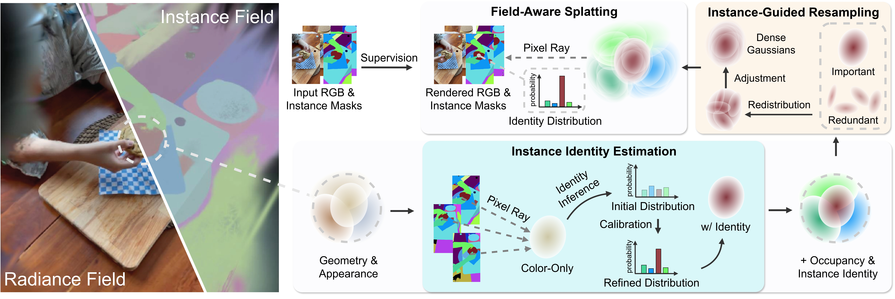

Gaussian Splatting for Unified Instance Representation
Understanding dynamic 3D scenes at the instance level is crucial for applications ranging from autonomous navigation to augmented reality. While 4D Gaussian Splatting has emerged as a powerful representation for novel view synthesis of dynamic scenes, lifting it to instance-aware understanding remains challenging due to inconsistent instance supervision across views, confusion between opacity and occupancy during rendering, and sparse semantic coverage in regions with limited Gaussian density.
We introduce the Consistent Instance Field (CIF), a unified representation that addresses these challenges through three key innovations: Field-Aware Splatting that properly handles identity distribution during rendering, Instance-Guided Resampling that redistributes Gaussians to ensure adequate coverage of semantic regions, and Instance Identity Estimation with calibrated probability distributions for robust instance assignment.
Our approach enables consistent panoptic segmentation and open-vocabulary 4D querying across dynamic scenes, achieving state-of-the-art results on challenging benchmarks including HyperNeRF and Neu3D datasets.
Novel rendering approach that properly handles identity probability distributions along pixel rays, avoiding the opacity-occupancy confusion in traditional splatting.
Robust instance assignment through calibrated probability distributions, handling inconsistent supervision across different viewpoints and timesteps.
Adaptive redistribution of Gaussian primitives based on instance importance, moving density from redundant regions to semantically meaningful areas.
Support for language-guided 4D scene understanding, enabling natural language queries for instance selection and tracking in dynamic scenes.

CIF Pipeline. We augment 4D Gaussian Splatting with an Instance Field alongside the Radiance Field. Field-Aware Splatting renders identity distributions with proper probability handling. Instance Identity Estimation uses calibration to handle cross-view inconsistencies. Instance-Guided Resampling redistributes Gaussians from dense redundant regions to sparse but semantically important areas.
Instance-level segmentation on dynamic scenes
HyperNeRFConsistent instance tracking across views
Neu3DLanguage-guided instance selection in 4D
HyperNeRF